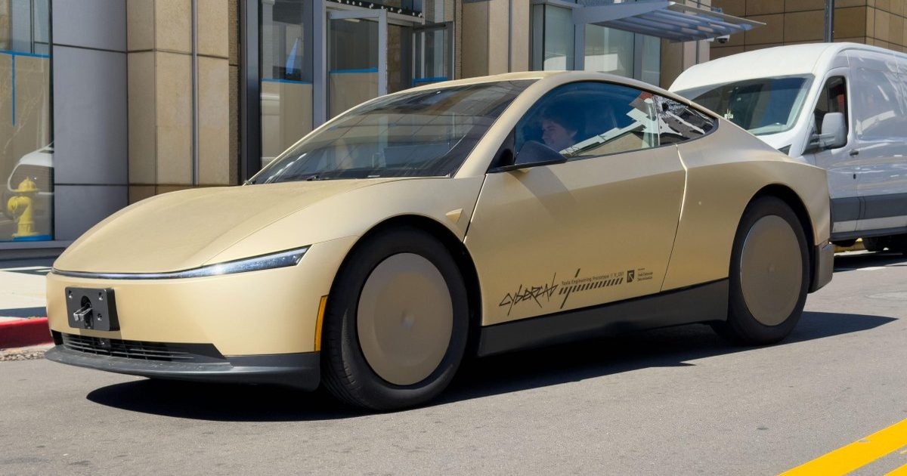

Федералы изучают сообщения о том, что робототехника Tesla ускоряется в школьных зонах
Национальная администрация безопасности дорожного движения заявляет, что она оценивает утверждения о том, что около 1000 роботов Tesla, использующих свою автоматизированную систему вождения, превышают «установленные ограничения скорости в активных школьных зонах.« Робототакси Waymo также столкнулись с аналогичными запросами, в том числе о незаконном проезде школьных автобусов и нападении на ребенка возле начальной школы в Калифорнии.
НАБДД: Офис …